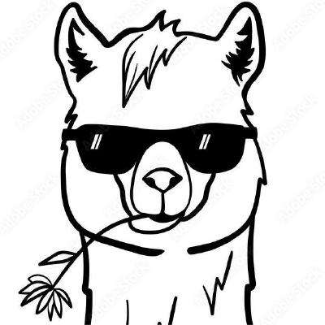

AI SYSTEMS / RESEARCH & ENGINEERING
Yunpeng
Huang.
Working where models
meet machines.

01 / WHAT I THINK ABOUT
From a single kernel
to a system at scale.
02 / BUILDING & SHARING
Selected work
03 / RESEARCH
Selected publications
THE EVERYDAY COLLECTION / 02
Useful things,
one place.
Repositories I return to.
Documentation I keep open.
A small map of my working world.
A personal collection. Some repositories may require access on GitHub.